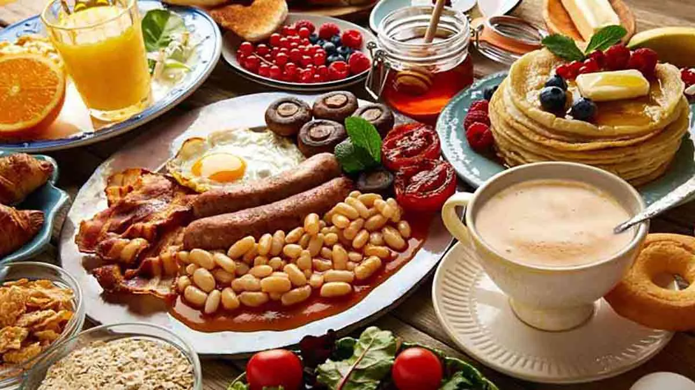

Bienvenidos a: Cocina en casa, Sazón web
Divierte tu paladar con cocina internacional
Si te gusta probar nuevos platos y sabores, incurciona en el mundo. Qué mejor forma de viajar que a través de recetas. La comida tiene la capacidad de transpórtanos a diferenttes lugares, y nunca antes había sido tan fácil acceder a estos secretos gastronomicos, hasta ahora. Prepara tu paladar para esta divertida aventura culinaria.
Te enseñaremos a prepara diferentes platillos como lo son: Tacos mexicanos, sushi, lasaña boloñesa, rollitos de primavera,cerdo agridulce o goulash húngaro, arepas colombianas, etc. Para nosotros es muy importante compartir contigo nuestros conocimientos,Recetas poco habituales que son perfectas para sorprender a todos, hasta a nosotros mismos. haciendo despertar nuestros sentidos. Ensaladas exóticas, carnes y pescados procedentes de mares y bosques lejanos preparados con técnicas, variedades de arroces tratadas de mil formas, así mismo no podia flatar por nada del mundo los deliciosos postres y tartas con frutas … Un recetario internacional, al alcanse de tu mano.
En el siguiente enlace podras encontrar ayuda extra, este link te llevara a una pagina de 15 recetas para preparar deliciosas salsas. Esto con el fin de darte un tip, en caso de que sea necesario y/o quieras tomarlo y aprender sobre este tema también. visita este sitio web